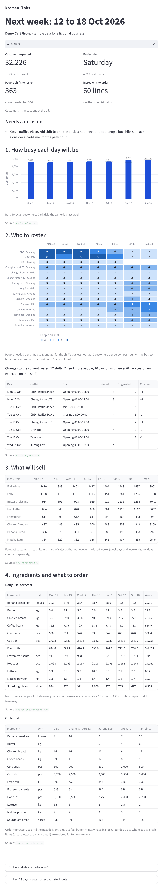

Demand forecasting for multi-outlet F&B · Singapore
Take the guesswork out of ordering and rosters.
We connect your sales system to your purchasing and forecast demand at each outlet, so you order and staff for what you'll actually sell.
How it works
From your till to tomorrow's plan
-
01
Your data
A sales export from your POS: transactions by outlet and hour. No customer details needed, ever.
-
02
Outside signals
Public holidays, school holidays and the weather, from official Singapore sources.
-
03
Forecast
Demand for every outlet, hour by hour, a week ahead, checked against "same as last week".
-
04
Plan
People for each shift, what each menu item will sell, the ingredients that takes, and an order list in your pack sizes.
What you see every morning
Next week, on one page
How busy each day will be
Customers per outlet for the next 7 days, next to the same day last week.
Who to roster
People on each of three 6-hour shifts, and which shifts on your current roster to change.
What will sell
Each menu item, day by day, from your own recent sales mix.
What to order
Ingredients needed per day, worked out from your recipes, and an order list in whole packs.

How we start
A week from export to first forecast
One POS export
Whatever your system produces. We map it, you change nothing.
First forecast within a week
Back-tested on your own history, so you see the accuracy before you rely on it.
20-minute walkthrough
We go through the forecast, orders and roster for your outlets together.
Weekly check-ins
Short and regular, to tune buffers, pack sizes and staffing rules as you go.
About
Shaurya Baid
Electrical engineering at NTU. I build hour-by-hour demand forecasts in energy markets, where a bad forecast costs real money every hour. Kaizen Labs brings the same methods to F&B outlets.
Contact
Start with one export
Email me and I'll tell you exactly which export to send.
shaurya@kaizenlabs.sg